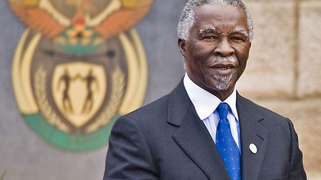

Thabo Mbeki
None dare challenge me when i say i am an African.

The problem is not a lack of understanding of what we are saying and doing; the problem is difference of opinion about what to do.
Short Biography of Thabo Mbeki:
- 1942 18 June Born and raised in Mbewuleni, Cape Province
- 1956 Thabo Mbeki Joins the African National Congress Youth League (ANCYL) at the age of 14.
- 1958 At the age 16 Thabo Mbeki has a baby boy out of wedlock with Olive Mpahlwa named Monwabise Kwanda.
- 1961 Thabo Mbeki completes his British "A" level examinations in England.
- 1961 Thabo Mbeki meets Nelson Mandela in Mayfair, Johannesburg
- 1966 Thabo Mbeki completes a Masters Degree in Economics at Sussex University in England.
- 1969 Thabo Mbeki arrives in Moscow and attends at the Institute of Social science.
- 1975Thabo Mbeki is appointed acting Chief representative of the ANC in Swaziland.
- 1984 Thabo Mbeki is appointed head of the ANC's Department of Information and Publicity.
you can read more about Tribute on Wikipedia.